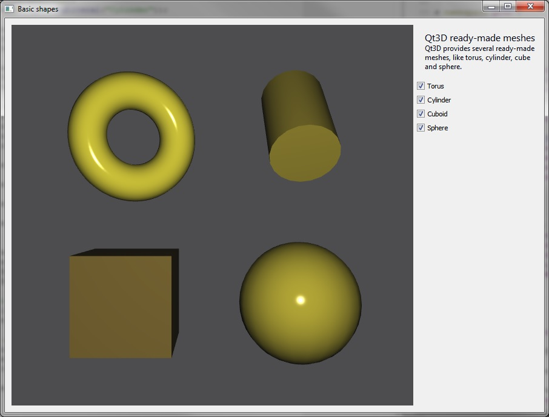

Qt 3D: Basic Shapes C++ Example
Shows four basic shapes that Qt 3D offers and sets up a mesh for each of them.

Basic Shapes shows four basic shapes that Qt 3D offers: a torus, a cylinder, a cube, and a sphere. The example also shows how to embed a Qt 3D scene into a widget and connect with other widgets.
Running the Example
To run the example from Qt Creator, open the Welcome mode and select the example from Examples. For more information, visit Building and Running an Example.
Setting Up a Torus Mesh
As an example, we go through how to set up a torus mesh. First, we instantiate the QTorusMesh, and then we set the mesh specific parameters, which for torus are radius, minor radius, and the number of rings and slices.
m_torus = new Qt3DExtras::QTorusMesh(); m_torus->setRadius(1.0f); m_torus->setMinorRadius(0.4f); m_torus->setRings(100); m_torus->setSlices(20);
The size and position of the torus can be adjusted with transform components. We create scale, translation, and rotation components and add them into the QTransform component.
Qt3DCore::QTransform *torusTransform = new Qt3DCore::QTransform(); torusTransform->setScale(2.0f); torusTransform->setRotation(QQuaternion::fromAxisAndAngle(QVector3D(0.0f, 1.0f, 0.0f), 25.0f)); torusTransform->setTranslation(QVector3D(5.0f, 4.0f, 0.0f));
To change the diffuse color of the mesh, we create a QPhongMaterial and set its diffuse color.
Qt3DExtras::QPhongMaterial *torusMaterial = new Qt3DExtras::QPhongMaterial(); torusMaterial->setDiffuse(QColor(QRgb(0xbeb32b)));
The final step is to add the torus into an entity tree, and we do that by creating a QEntity with a parent entity and adding the previously created mesh, material, and transform components into it.
m_torusEntity = new Qt3DCore::QEntity(m_rootEntity); m_torusEntity->addComponent(m_torus); m_torusEntity->addComponent(torusMaterial); m_torusEntity->addComponent(torusTransform);
We can control the visibility of the entity by defining whether it has a parent or not. That is, whether it is part of an entity tree or not.
void SceneModifier::enableTorus(bool enabled) { m_torusEntity->setEnabled(enabled); }